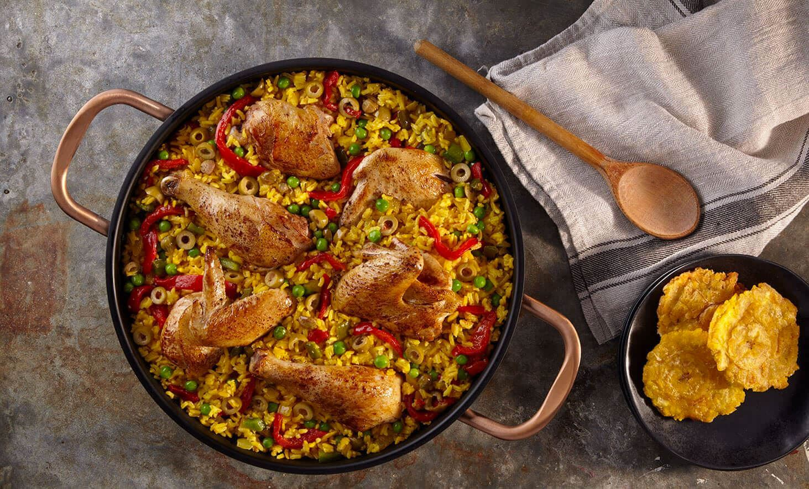

Arroz Con Pollo

Description
Translating directly to rice with chicken, arroz con pollo
is a traditional dish in Latin America and Spain. This classic
meal can vary from country to country and the family recipe.
For our recipe, we used well-seasoned chicken thighs, drumsticks,
onion, bell peppers, diced tomatoes, and long-grain rice (of course).
Ingredients
- 3 lb bone in, skin on chicken thighs and drumsticks
- Kosher salt
- Freshly ground pepper
- 2 tsp ground cumin
- 1 tsp dried oregano
- 1 tsp garlic powder
- 1/2 tsp cayenne pepper
- 3 tbsp extra virgin olive oil
- 1 large onion
- 2 bell peppers
- 4 cloves garlic
- 2 tbsp tomato paste
- 1 c long-grain rice
- 1 1/4 c. low sodium chicken broth
- 1 can diced tomatoes
- 1 bay leaf
Directions
- Pat chicken dry with paper towels, then season all over with salt and pepper. In a small bowl, combine cumin, oregano, garlic powder, and cayenne. Rub mixture into chicken.
- In a large skillet over medium-high heat, heat oil. Add chicken and cook until golden, 5 minutes per side. Remove skillet and reserve on a plate.
- To same skillet over medium heat, add onion and pepper. Cook until soft, 5 minutes. Add garlic and cook until fragrant, 1 minute more, then stir in tomato paste.
- Add rice and cook until well coated and toasted, 3 minutes. Pour in chicken broth and diced tomatoes, and bay leaf, stirring up any bits from bottom of pan. Bring to a boil, then add chicken back to skillet. Reduce heat and let simmer, covered, until chicken is cooked through and rice is tender, 30 minutes. Stir occasionally to make sure rice is not sticking to bottom of pan. Add more water or broth as necessary.
- Remove bay leaf and serve with cilantro.
Links